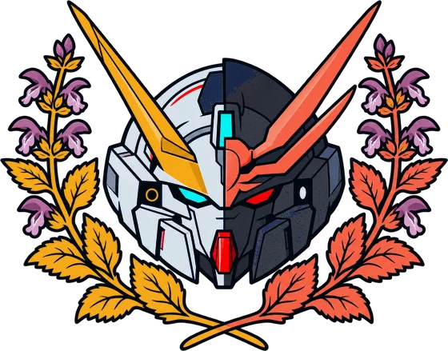

TOOLS
- TOOLS3
- STATUSIN BUILD
- RUNS ONCLAUDE
- GOALFASTER CONCEPT-TO-TEST
NAMESAKE
Turntable
This browser can’t draw the 3D model.
The studio shares its name with the RX-124 Gundam TR-6 [Woundwort], mechanical design by Kenki Fujioka: a modular core unit built to take on whatever the job needs.
STUDIO MARK
Insignia

SYSTEMS
The tools
Three tools, all built on Claude, all for client work. Each one is tied to the client’s own design system rather than a generic one.
TL-01 Flow generator
Turns research notes or job stories into annotated wireframes and mid-fi prototypes. You start from what the research said, not from a blank canvas.
TL-02 Design-system assistant
Writes component specs, states and accessibility notes that line up with the library you already have. New components look like they belong.
TL-03 Critique agent
Reviews screens against usability heuristics, WCAG and your internal guidelines, then proposes concrete revisions. You get “change this, here” rather than a list of principles.
MISSION
Why build them
Faster concept-to-test cycles on client work, without the design rigor slipping. The tools do the repetitive parts. The decisions stay with people.
CONSTRAINTS
What they won’t do
- Invent a visual language of their own.
- Drift off your tokens or spacing rules.
- Treat accessibility as a pass at the end.